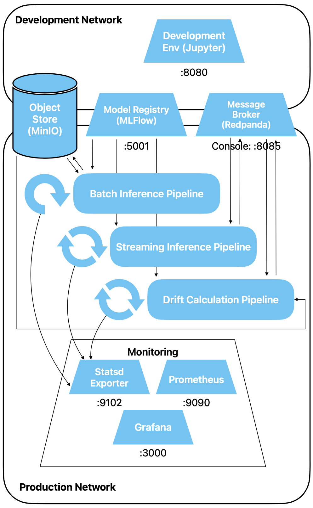
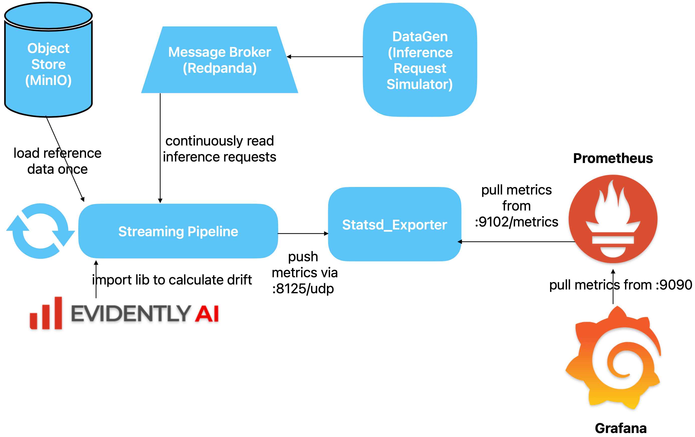

Drift Detection Pipeline
In dieser Übung bauen wir eine Streaming Pipeline, welche Mushroom Inferenz-Daten auf Drift
prüft und regelmässig die Resultate an unsere Monitoring Infrastruktur meldet.
Vorbereitung
-
Übungen
Architektur
Unsere Architektur sieht nun wie folgt aus. Neben allen Infrastrukturkomponenten haben wir drei
Pipelines:
- Unsere Batch Inference Pipeline, welche periodisch getriggert werden muss
- Unsere Streaming Inference Pipeline, welche konstant läuft
Neu hinzu kommt
- Unsere Streaming Drift Detection Pipeline, welche konstant läuft
und den Datendrift unserer Mushroom Rohdaten an unsere Monitoring-Infrastruktur meldet.

Aufbau
- Unser Datagen simuliert "Requests for a Prediction" Events und schickt entsprechende
Event
Notifications an Kafka
- In diesen Nachrichten sind die Features eines Prediction Requests (bzw. die Rohdaten, da
wir in unserem vereinfachten Modell keine Features berechnen) enthalten
- Die Drift Detection Pipeline liest diese Notifications laufend von Kafka und sammelt
alle Requests, bis sie eine akzeptable Menge zusammen hat
- Sie vergleicht dann die aktuellen, von Kafka erhaltenen Daten mit dem Referenzdatenset,
welches für das Training des Mushroom-Modells verwendet wurde, und berechnet pro Spalte
eine Kennzahl, welche den Drift angibt
- Diese Kennzahlen sendet die Pipeline an Statsd, wo sie von Prometheus gepollt werden,
welcher die Daten als Zeitreihe speichert
- Am Ende der Kette pollt Grafana diese Daten von Prometheus, um sie in einem Dashboard
darstellen zu können, um bei zu grossem Drift Alarm zu schlagen.

Referenzdatenset
Lade die Trainingsdaten, mit denen unser Modell trainiert wurde, als Referenzdatenset.
Weichen die Daten in den eingehenden "Requests for Prediction" zu stark von denjenigen, mit
welchen das Modell trainiert wurde, ab, haben wir Datendrift und unser Modell wird nicht
mehr optimal funktionieren.
import pandas as pd
reference_df = pd.read_parquet('s3://traindata/train_raw.parquet', storage_options={"anon": False}).drop("class", axis="columns")
Evidently
Für den Vergleich zweier Verteilungen und die Berechnung des Drifts verwenden wir die Bibliothek
Evidently OSS. Evidently ist ein
Produkt, welches sehr viele Möglichkeiten bietet, um verschiedene Arten von Drift zu berechnen
und zu visualisieren. Wir verwenden hier nur einen ganz kleinen Teil davon, nämlich die
automatische Berechnung von zwei Distanzmassen (normierte Wasserstein Distanz und normierte
Jensen-Shannon Distanz), welche eine Aussage erlauben über die Abweichung zweier Verteilungen
voneinander.
Evidently beinhaltet eine Logik, um zu entscheiden, welches Distanzmass sich für ein gegebenes
Datenset am besten eignet. Für unser Mushroom Datenset hat sich Evidently für die oben genannten
Metriken entschieden. Wie dieser Entscheidungsprozess funktioniert, ist
hier
dokumentiert. Wir gehen im Rahmen des Kurses nicht weiter auf diese Wahl ein.
Es ist jedoch hilfreich, wenn du dich in die
Core
Concepts von Evidently kurz einliest. Die
Test Suite Funktionalität von
Evidently verwenden wir im Workshop nicht, diesen Teil kannst du auslassen.
Schreibe eine Funktion, welche als Argumente zwei Pandas DataFrames erhält. Der eine ist unser
Referenz-Datenset (also unsere Trainingsdaten, ohne Label). Der andere entspricht den
gesammelten Inferenz-Requests, repräsentiert also aktuelle, neue Daten.
Dann machen wir es uns einfach und führen den einen Evidently Report aus mit dem
DataDriftPreset. Dies generiert den gesamten Report inklusive Visualisierung, aus
welchem wir aber nur den Namen des durchgeführten Testes (stattest_name) sowie die
eigentliche
drift_score pro Spalte benötigen. Dies ist sicher nicht ein sehr effizientes Vorgehen,
da viel
generiert wird, was wir gar nicht benötigen. Du kannst gerne selbständig weiter optimieren :-)
Ergänze:
from evidently.report import Report
from evidently.metric_preset import DataDriftPreset
from evidently import ColumnMapping
from loguru import logger
from datetime import timedelta
import pandas as pd
def calculate_drift(df: pd.DataFrame, reference_df: pd.DataFrame,) -> tuple[tuple[str],
tuple[float]]:
logger.info(f"Received window of length {len(df)}")
# the dataframe generated from json has an index of dtype str, which we replace by an index of ints,
# or else evidently chokes
df = df.reset_index(drop=True)
# use a column mapping to make it easy for evidently to find the right metric
column_mapping = ColumnMapping()
column_mapping.categorical_features = ['cap-shape', 'gill-attachment', 'gill-color', 'stem-color']
column_mapping.numerical_features = [c for c in df.columns if c not in
column_mapping.categorical_features]
# define and execute evidently standard drift report (don't forget to pass the column mapping)
# your code goes here
# extract an iterable of features and a dict containing stattest_name and drift_score per column
# one entry of the dict should look like this:
# {'cap-diameter': {'drift_score': 0.1, 'stattest_name': 'Jensen-Shannon_distance'}}
# for the stattest_name value, you need to replace spaces by underscores
# the drift score must be of type float
# your code goes here
return features, metrics
Lösungsvorschlag
from evidently.report import Report
from evidently.metric_preset import DataDriftPreset
from evidently import ColumnMapping
from loguru import logger
from datetime import timedelta
import pandas as pd
def calculate_drift(df: pd.DataFrame, reference_df: pd.DataFrame,) -> tuple[tuple[str], tuple[float]]:
logger.info(f"Received window of length {len(df)}")
# the dataframe generated from json has an index of dtype str, which we replace by an index of ints,
# or else evidently chokes
df = df.reset_index(drop=True)
# use a column mapping to make it easy for evidently to find the right metric
column_mapping = ColumnMapping()
column_mapping.categorical_features = ['cap-shape', 'gill-attachment', 'gill-color', 'stem-color']
column_mapping.numerical_features = [c for c in df.columns if c not in column_mapping.categorical_features]
# define and execute evidently standard drift report
data_drift_dataset_report = Report(metrics=[DataDriftPreset()])
data_drift_dataset_report.run(reference_data=reference_df, current_data=df, column_mapping=column_mapping)
# extract a list of features and calculated drift metrics from report
report_whole_output = data_drift_dataset_report.as_dict()
report_just_drift = report_whole_output["metrics"][1]["result"]["drift_by_columns"]
metrics_dict = {}
for column_name, column_dict in report_just_drift.items():
metrics_dict[column_name] = {k:v for k, v in column_dict.items() if k in ['stattest_name', 'drift_score']}
metrics_dict[column_name]['stattest_name'] = metrics_dict[column_name]['stattest_name'].replace(' ', '_')
metrics_dict[column_name]['drift_score'] = float(metrics_dict[column_name]['drift_score'])
features, metrics = zip(*metrics_dict.items())
return features, metrics
Statsd
Nun schreibst du eine Funktion, welche über alle berechneten Feature/Metrik Paare loopt und für
jedes Paar unter dem vorgegebenen Präfix ein
gauge an statsd schickt. Wir verwendet die
folgende
Statsd Python
Bibliothek.
Als Dataset Name nimmst du mushroom und als Version v1.
import statsd
def report_drift_to_statsd(df: pd.DataFrame, reference_df: pd.DataFrame,
statsd_client: statsd.client.udp.StatsClient) -> None:
# calculate metric per column
features, metrics = # your code goes here
# push to statsd
# your code goes here
prefix = ...
for ...
Lösungsvorschlag
Wie der zu übergebende String genau auszusehen hat, findest du im File
statsd_metrics-mapping.yml, welches wir in der vorhergehenden Übung
konfiguriert haben.
import statsd
def report_drift_to_statsd(df: pd.DataFrame, reference_df: pd.DataFrame, statsd_client: statsd.client.udp.StatsClient) -> None:
# calculate metric per column
features, metrics = calculate_drift(df, reference_df)
# push to statsd
prefix = f"drift_metrics.mushroom.v1"
for f, m in zip(features, metrics):
statsd_client.gauge(f"{prefix}.{f}.{m['stattest_name']}", m['drift_score'])
Quix
Wie in der Übung mit der Streaming Pipeline verwenden wir
Quix
Streams. Das Setup sieht wie folgt aus:
from quixstreams import Application
# create main quix object
app = Application(broker_address="message-broker:9092")
# define topic and message format
input_topic = app.topic(name="mushroom_inference_request", value_deserializer="json")
# create a StreamingDataFrame
sdf = app.dataframe(topic=input_topic)
Und nun wird es etwas kompliziert. Quix bietet bisher nur einfache Aggregationen auf Windows an.
Sollen komplexere Aggregationen durchgeführt werden, muss mit zwei Callbacks
(
initializer() und
reducer()) gearbeitet werden. Lies die entsprechende
Dokumentation
durch.
Unser initializer() wird genau einmal aufgerufen. Er erhält als Argument den Inhalt
einer Kafka Event Notification als dict. Da wir mehrere solche dicts in einem dict sammeln
wollen, fügen wir einen Index hinzu. Täten wir dies nicht, würde jede hinzugefügte Row die
bisherige überschreiben.
def initializer(value: dict) -> dict:
"""
Initialize the state for aggregation when a new window starts.
It will prime the aggregation when the first record arrives
in the window.
"""
# add a string index to the dict to get something like this
# we need this second level when combining multiple rows in
# the reducer, or else we just overwrite the same value
# again and again
"""
{0: {'cap-diameter': 3.0,
'cap-shape': 3.0,
'gill-attachment': 5.0,
'gill-color': 2.0,
'stem-height': 0.7591098099,
'stem-width': 1397.0,
'stem-color': 9.0,
'season': 0.9545582517}}
"""
return {str(k):v for k,v in enumerate([value])}
Unser reducer() macht fast dasselbe. Er fügt die neu erhaltene message den bisherigen
hinzu. Das geht einfach, wenn wir zuerst den Index entfernen, und dann wieder einen
inkrementellen Index hinzufügen.
def reducer(aggregated: dict, value: dict) -> dict:
"""
Called on every row but the first
Reducer always receives two arguments:
- previously aggregated value (the "aggregated" argument)
- current value (the "value")
It combines them into a new aggregated value and returns it.
This aggregated value will be also returned as a result of the window.
"""
# first add old and new (without their respective index)
list_of_dicts = [value] + list(aggregated.values())
# then readd an incremental index
return {str(k):v for k,v in enumerate(list_of_dicts)}
Instanziere nun noch den statsd client, definiere den Streaming Dataframe und starte den
Streaming Prozess.
statsd_client = statsd.StatsClient('statsd', 8125)
sdf = (
# quix lacks the functionality to define a window of a fixed size, which would be appropriate here
# so instead as a crutch, we use a tumbling window, which works but is a bit weird
# don't make it too short, it should be long enough that reducer is called at least once
# your code here (tumbling window with window size 10 seconds)
# create a "reduce" aggregation with "reducer" and "initializer" functions
# this is the quix way to define arbitrary aggregations (standard aggregations have their
convenience functions)
# your code here (add the reducer and initializer callbacks)
# emit results only for closed windows
# your code here
# now calculate drift statistics on full windows
.apply(lambda m: report_drift_to_statsd(pd.DataFrame(m["value"]).T, reference_df, statsd_client))
)
app.run(sdf)
Lösungsvorschlag
statsd_client = statsd.StatsClient('statsd', 8125)
sdf = (
# quix lacks the functionality to define a window of a fixed size, which would be appropriate here
# so instead as a crutch, we use a tumbling window, which works but is a bit weird
# don't make it too short, it should be long enough that reducer is called at least once
sdf.tumbling_window(duration_ms=timedelta(seconds=10))
# create a "reduce" aggregation with "reducer" and "initializer" functions
# this is the quix way to define arbitrary aggregations (standard aggregations have their convenience functions)
.reduce(reducer=reducer, initializer=initializer)
# emit results only for closed windows
.final()
# now calculate drift statistics on full windows
.apply(lambda m: report_drift_to_statsd(pd.DataFrame(m["value"]).T, reference_df, statsd_client))
)
app.run(sdf)
Test
Du kannst nun obigen Code für die Drift Detection Pipeline ausführen. Entweder erstellst du
analog dem Data Generator ein Skript, oder du führst in direkt aus einem Notebook aus.
Starte den Code der Drift Pipeline.
Nun starte den Datengenerator. Gib gleich ein wenig Gas, damit die Drift Pipeline auch genug
Daten hat, um aussagekräftige Vergleiche zu machen.
docker compose run --rm --name=datagen --entrypoint=python3 development_env mushroom_datagen.py -b 10 -s 100 -r 5 -v
Überprüfe, ob
- Die Drift Pipeline Windows verschiedener Grösse erkennt (Log Meldungen in etwa
Received window of length 152)
- Im Statsd Updates sichtbar sind
- In Prometheus Updates sichtbar sind
- In Grafana Datenpunkte ankommen (stelle oben rechts
das Anzeige-Intervall auf Last 5 Minutes)
Wenn alles klappt, stoppe den Datengenerator wieder.
Drift Generation
Nun erweitern wir den Datengenerator, damit er für eine Spalte einen Drift einfügen kann. Der
Einfachheit halber hardcoden wir die Art des Driftes
Füge den Datengenerator ein weiteres Kommandozeilenargument hinzu vom Typ int mit dem
switch -d für drift_factor und default 1.
Lösungsvorschlag
parser.add_argument(
"-d",
"--drift_factor",
type=int,
help="Start factor for simulating drift",
default=1,
)
Ziehe das Argument durch alle notwendigen Funktionsaufrufe und Funktionsheader durch.
Lösungsvorschlag
Anpassungen im
- run() Aufruf
- in der run() Deklaration
- im generate_event() Aufruf
- in der generate_event() Deklaration
Nun multipliziere in der Funktion generate_event() oberhalb des return Statements den
Wert der Spalte season mit dem drift.
Lösungsvorschlag
new_row['season'] = new_row['season']*drift
Lösche alle bereits gemachten Meldungen und Messungen.
- stoppe den Datengenerator und die Drift Pipeline
- lösche in der Redpanda Konsole alle Topics
- speichere deine offenen Notebooks
- stoppe alle Services (docker compose down)
- lösche den Ordner state, welchen die Drift Pipeline automatisch erstellt (im
Verzeichnis, wo auch das Notebook bzw. Skript der Drift Pipeline liegt)
- lösche das File grafana_work/data/grafana.db
- starte die Services wieder
Baue dir in Grafana ein neues Dashboard, welches dir den Drift anzeigt. Als einfache Variante
kannst du zwei Liniendiagramme machen, einmal für eine Spalte ohne Drift, und einmal für eine
Spalte mit Drift.
Starte nun die Drift Detection Pipeline.
Dann generiere Daten, zuerst etwa eine Minute lang ohne Drift:
docker compose run --rm --name=datagen --entrypoint=python3 development_env mushroom_datagen.py -b 10 -s 100 -r 5
Schaue dir das Grafana Dashboard an.
Nun füge Drift hinzu:
docker compose run --rm --name=datagen --entrypoint=python3 development_env mushroom_datagen.py -b 10 -s 100 -r 5 -d 2
Lasse dies wieder etwa eine Minute laufen, dann kannst du stoppen und den Drift auf 3 erhöhen.
Du solltest nun in Grafana beobachten können, wie die der Drift für die Spalte season
zunimmt.
Wrapup
Du hast in dieser Übung eine Stream Processing Pipeline gebaut, welche Inferenz-Requests für
unser Mushroom Modell auf Datendrift überwacht und die Ergebnisse an unsere Monitoring
Infrastruktur meldet.
Dabei haben wir wiederum auch ein paar Abkürzungen genommen, was im Rahmen eines Kurses zwar
vertretbar ist, deren wir uns daber auch bewusst sein sollten:
- Wir haben Evidently einen ganzen Report berechnen lassen, anstatt nur die Metrik, welche
wir brauchen
- Wir haben uns nicht um Skalierbarkeit gekümmert. Mit unserem Aufbau und Quix ist die
Pipeline einfach skalierbar
- Unser Meldungsformat war sehr einfach und ohne jegliche Metadaten
- Unser Meldungsformat war ein einfaches json, ohne Schema und Validierung
- Einige Dinge haben wir hartkodiert bzw. nicht sauber entkoppelt (z.B. Feature Typen,
Topic)
- Keine Tests, kein sauberes Error Handling
Und inbesondere
Wir prüfen nur die Rohdaten auf Drift. Es ist selbstverständlich auch empfohlen, Features zu
prüfen. Dies wird wichtiger, sobald die Anzahl von Features und Modellen zunimmt, und nur mit
einem Feature Store sinnvoll umsetzbar.